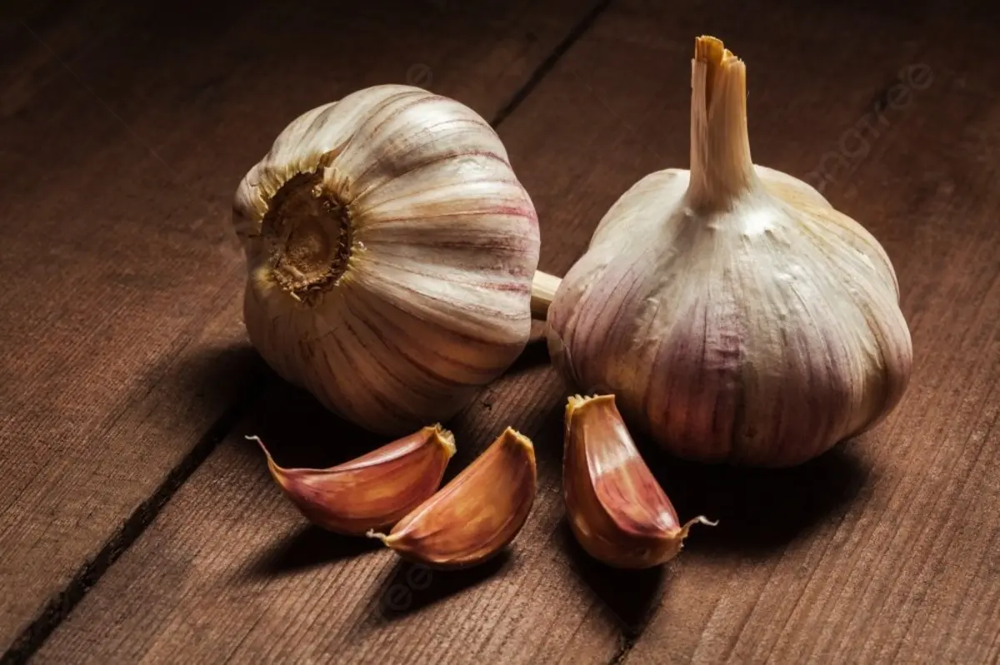

Garlic
Hair Loss Treatment:
Anti-Fungal Activity:
- Garlic contains vitamins, minerals, and antioxidants that nourish hair follicles and promote healthy hair growth.
- It helps strengthen hair strands, reducing breakage and hair loss.
- Garlic's sulfur compounds may contribute to the production of collagen, a protein that supports hair structure and growth.
- Its antibacterial properties can help maintain a clean and healthy scalp, reducing the likelihood of scalp conditions that contribute to hair loss.
- Garlic's antifungal properties make it effective against various fungal strains, including those causing scalp infections.
- It can help alleviate itching, redness, and inflammation associated with fungal infections on the scalp.
- Garlic's natural compounds may inhibit the growth and spread of fungi, preventing their colonization on the scalp.
- Regular use of garlic-infused products may help maintain a balanced scalp microbiome, reducing the risk of fungal overgrowth.